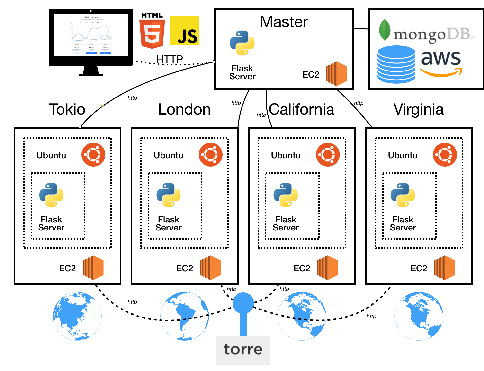

Find the path that others have taken to get a job
If you are finding your ideal job, you will find out how other people have achieved that. If you are a recruiter, you could see where to find the candidates for a specific position
How does this work?
